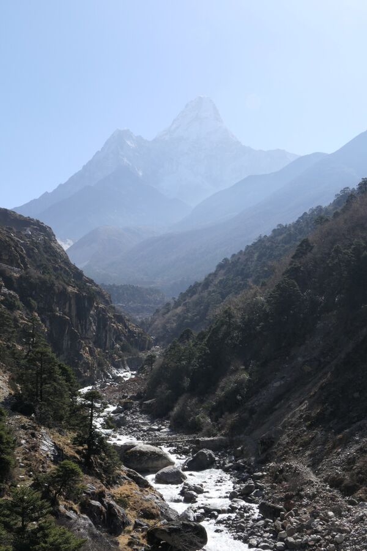
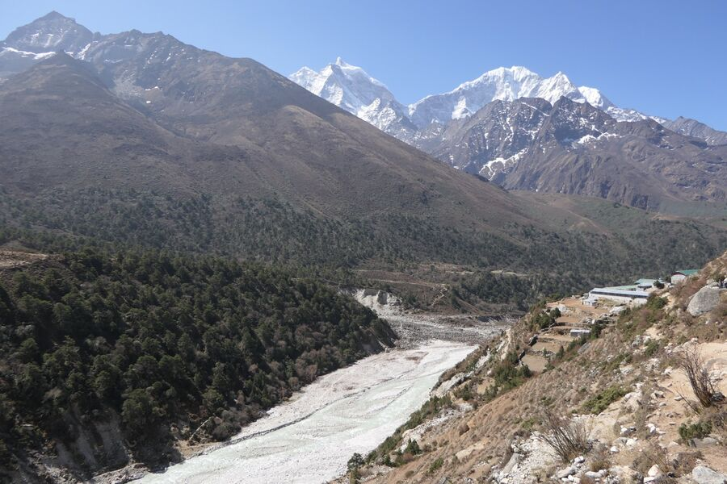
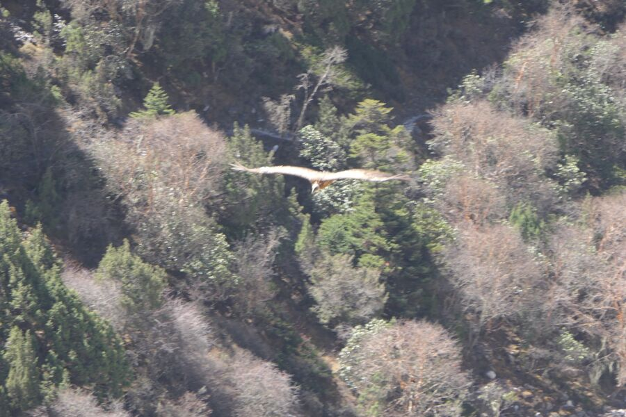
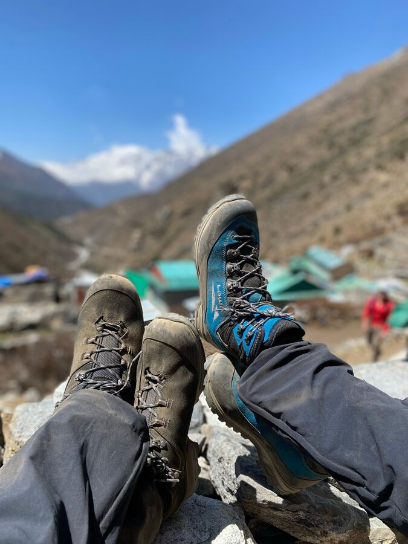
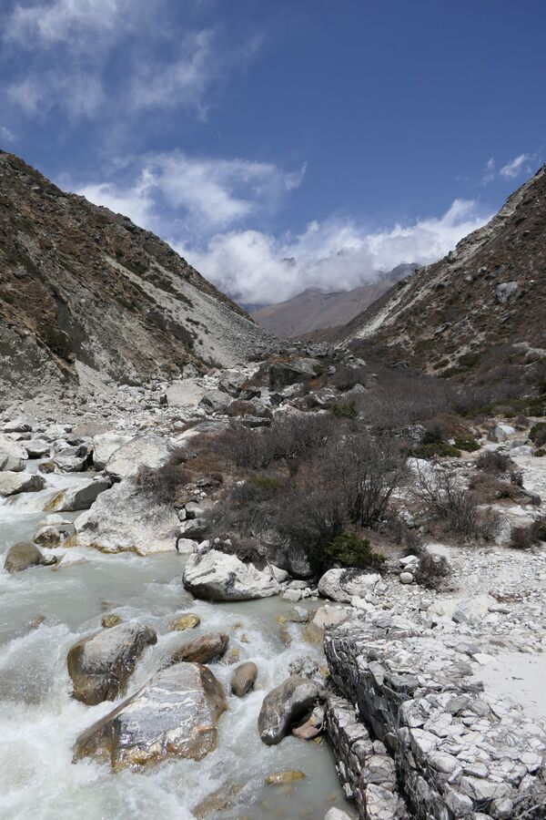
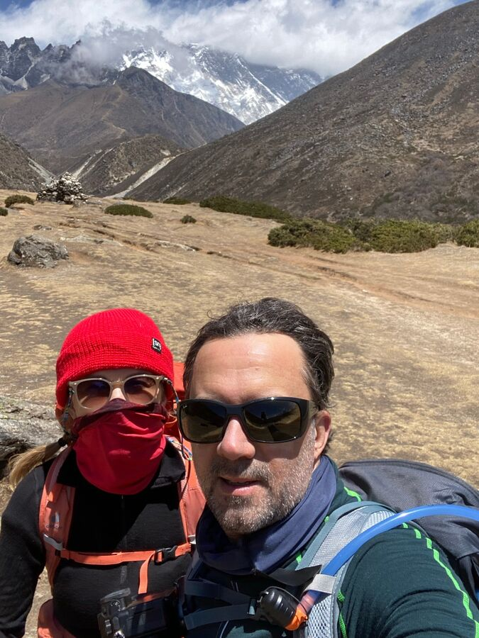
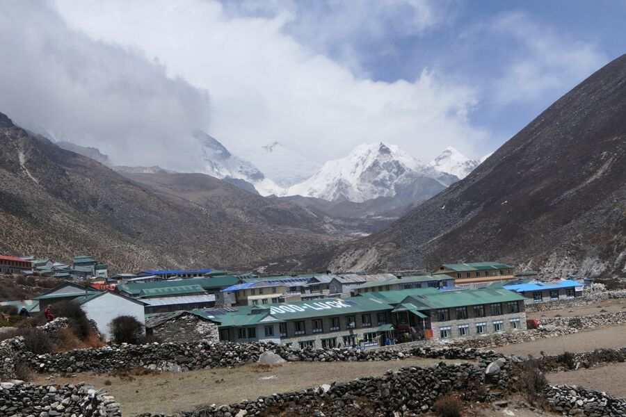
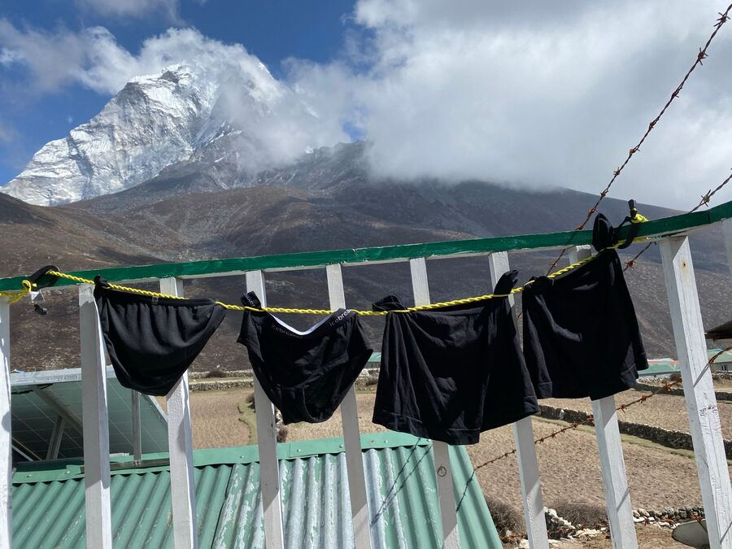

Deboche'de ısıtmalı yataklardaki gece nispeten iyiydi. Burada ikimiz de henüz hiç deliksiz uyumadık, ama bu muhtemelen yükseklikten. Her neyse, odamızın penceresinden manzara muhteşemdi: doğrudan Everest'e bakış. Bugün ona giderek daha çok yaklaşacaktık.
Tazelenmek bugün yine bir işkenceydi, çünkü odada gerçekten dondurucu bir soğuk vardı. Sıfırın birkaç derece üzerindeki suyla diş fırçalamak ve yıkanmak başlı başına bir meydan okuma. Sonra çabucak çantayı toplamak, çünkü erkenden alınıyor. Soğuk ortak salonda kahvaltıyı hızla bitirdik ki dışarı, güneşe çıkabilelim.
Yol başta hafif iniş ve çıkışlarla yatay ilerliyordu. Ne olursa olsun: İlk 10 dakika insan tamamen kafayı yiyor. Sonra az çok ısınıyorsunuz ve yeniden gidiyor.
Bugün son asma köprüyü geçtik. Oradan bugün giderek yaklaşacağımız Ama Dablam'a (6.856 m) harika bir manzara vardı. Yolun bir kısmında Everest'in tepesini de görebildik, sonra yavaş yavaş Lhotse'nin (8.516 m) arkasında kayboluyor ve uzun süre saklanıyor. Onu muhtemelen ancak Gorak Shep'te yeniden göreceğiz.

Yol genel olarak iyi yürünüyordu. Az eğim, az basamak, buna karşılık daha çok kum. Şunu söyleyeyim: Taşların üzerinde yürümek zor, ama derin kum da pek daha iyi değil.
Bitki örtüsü artık kesin olarak bozkıra dönüştü. Ağaç sınırı yaklaşık 4.000 metrede görünüyor; ağaç neredeyse hiç görülmüyor, sadece küçük çalılar, ot ve likenler.

Hayvanlara gelince: Kuzgunlar ve birkaç kartalın yanı sıra bugün küçük kuşlardan oluşan bir sürü de gördük. Ve elbette bolca yak, dzopkyo ve at.

Bugün Pangboche köyünden geçtik. Ama orada uzun kalmadık, hızla devam ettik. Hava oldukça sıcaktı, ben uzun kollu tişörtle yürüdüm. Yeşim'in üzerinde sadece tişört vardı.
Yolun yarısında, daha 10:15 civarında, geride bıraktığımız yola ve artık giderek yaklaştığımız dağlara, özellikle de Ama Dablam'a bakarak öğle molası verdik.

Bugün öğlen son günlere göre daha az yedik, çünkü saat de hâlâ çok erkendi. Yeşim bir tür vejetaryen burrito, ben vejetaryen çorba yedim. Yanında kızarmış patates dilimleri. Patates, bu çorak ve taşlık bölgede yetiştirilen az sayıdaki sebzeden biri. Özellikle de bugün gittiğimiz Dingboche'de.
Öğle yemeğinden sonra yol bizi oldukça rahat ve sadece hafif bir eğimle devam ettirdi. Arada birkaç yokuş vardı ve orada artık 4.000 metrenin üzerinde olduğumuzu fark ediyorsunuz. Bir keresinde küçük ama coşkun Imja Nehri'ni geçmek için epey aşağı inmemiz gerekti. Sonra o yüksekliği maalesef yeniden kazanmak zorunda kaldık. Bu da bugünün en yorucu bölümüydü.

Bu arada en geç orada gerçekten çok rüzgârlıydı. Uzun kollu tişörtlerimizi giymiştik; boyunluk rüzgâra karşı iyi gelir, ayrıca sık sık havalanan toza karşı da hızla kullanılabilir. Son günlerde bundan galiba epey soludum, çünkü arada bir öksürüyorum. Bu, adını bölgeden alan Khumbu öksürüğü.

Yolun geri kalanı, görünüşe göre eski bir buzul yatağından geçiyordu. Her yer kumluydu ve her yerde moloz ile buzulun bir zamanlar oraya bıraktığı bazı devasa kayalar vardı. Ne kadar farklı bitki örtülerinden geçtiğimizi görmek çok ilginç. Katmandu'da tropikal. Lukla'dan itibaren çok yeşil ve Avrupa'daki orta yükseklikteki dağlara benziyor. Namche Bazaar'ın ötesinde hâlâ ormanlık, daha çok alpin. Ve şimdi neredeyse bir çöl ya da bozkır gibi.
Saat 13 civarında – yani 5 saat sonra – Dingboche'ye ulaştık. Good Luck Hotel'de kalıyoruz. Gerçekten büyük ve epey dolu. Vardığımızda misafir salonunda birkaç yürüyüş grubu oturuyordu.

Dingboche, ikinci aklimatizasyonu yapmak için sevilen bir yer. Burada, 4.400 metrede, 5.000 metreye iyi hazırlanabilirsiniz. Biz de bunu yarın sabah yapacağız.
Odamızın ayrı bir tuvaleti ve Ama Dablam'a harika bir manzarası var. Yan pencereden giren güneş sayesinde çok güzel ısınmıştı. Sonra hızla biraz çamaşır yıkayıp güneşe astık.

Akşam misafir salonuna gittik; maalesef hâlâ serindi ama buna karşılık insanlarla doluydu. Katmandu'da otelimizde kalan yaklaşık 70 yaşındaki Brezilyalıyı son günlerde sık sık görüp konuştuk. O da bizimle aynı rotayı yürüyor, ama kendi rehberiyle. Akşam yemeğini onunla birlikte yedik.
Sonra oldukça erken odaya çıktık. Yarın sabah yakındaki bir tepeye çıkacağız. Orada zinde olmak istiyoruz. Şimdi saat 20:40'ta, artık serinlemiş odada uyku tulumu ve kalın yorgana sarılmış yatıyoruz. İyi geceler!